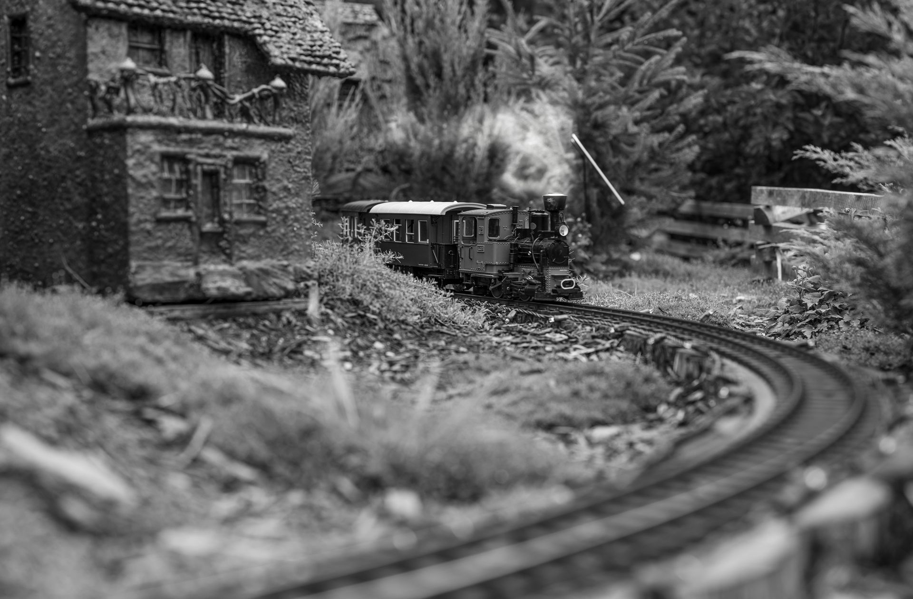

Les gares disparues du Québec
Autrefois, chaque village ou petite ville du Québec possédait sa gare. Ces bâtiments modestes ou plus imposants étaient le cœur battant de la communauté : on y accueillait les voyageurs, on expédiait des marchandises, et on partageait des moments de vie importants. Pourtant, avec le déclin du transport ferroviaire régional, beaucoup de ces gares ont été abandonnées, transformées ou démolies, laissant derrière elles une nostalgie profonde.
Au musée, nos maquettes permettent de redonner une place à ces édifices disparus. Grâce à des recherches minutieuses et à l'aide de passionnés, nous reconstituons fidèlement des gares régionales aujourd'hui effacées du paysage. Chaque maquette est une fenêtre sur le passé, où l'on peut redécouvrir l'architecture typique, les matériaux utilisés, mais aussi l'atmosphère unique qui régnait autour de ces lieux de rencontre.
Ces reconstructions ne sont pas que des objets d'exposition : elles sont un moyen de raviver la mémoire collective. Elles rappellent que le chemin de fer a façonné la vie économique, sociale et culturelle de plusieurs générations de Québécois, et que ces gares, même disparues, font toujours partie de notre identité commune.